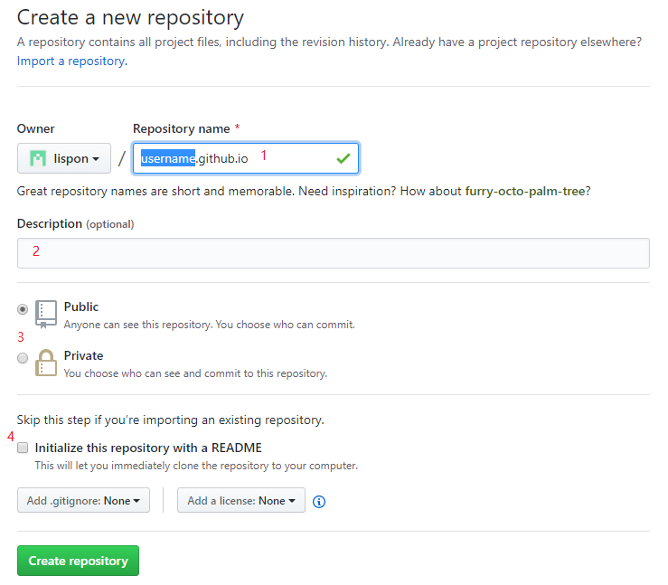
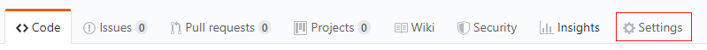

1. 使用Github pages + sphinx搭建博客¶
创建时间: 20191029 最近修改时间: 20191030
使用的工具:
github账户
git
vscode
vscode中安装reStructuredText插件
vscode中安装python插件
python 3
安装sphinx
安装doc8
1.1. 在Github 中新建存储库, 并配置Github Pages¶
1.1.1. 新建存储库¶
如下图所示, 新建存储库, 存储库的名称为”username.github.io”, 其中, username为 Github账户的名称, 这里我的账户名称为lispon.为了方便, 最好勾选图中的**4**, 这样会自动生成README.md文件.
注意: 这里即使设置为Private, 搭建的博客仍然可以被访问.
1.1.2. 配置Github Pages¶
如下图所示, 点击Settings; 向下找到Github Pages.
如果新建的存储库的名称正好符合**username.github.io**的格式, 那么无法选择Source, 如下图示, 同时, 可以直接通过**https://username.github.io**来访问, 否则, 必须要通过*https://username.github.io/<存储库名称>**来访问.

否则, 会出现选择Source的下拉列表, 如下图所示. 最好是选择第二项**master branch/docs older**, 如果存储库中没有docs文件夹, 该项灰显, 无法选中.
注意: 这里需要做一个取舍. 如果想实现直接通过
https://username.github.io的格式访问, 那么无法选择docs作为Github Pages的源位置; 如果想实现docs作为Github Pages的源位置, 那么不能直接通过https://username.github.io的格式访问(或者有其他方法, 我不了解).
1.1.3. 克隆存储库到本地, 修改.¶
使用Git命令添加docs文件夹, 并设置Github Pages Source为master branch/docs folder
如果docs文件夹中为空, 那么Git会忽略该文件, 无法添加到存储库中, 那么可以新建txt文件, 重命为”.nojekyll”, 然后提交. .nojekyll文件是让Github查找提供的index.html文件作 为博客主, 则, Github会根据存储库下根目录下的README.md自动转化成html并作为博客主页 (在存储库中不存在EADME.md转化成的html文件).
1.1.4. 实际效果¶
将静态html文件添加到该存储库下的docs文件夹内, 然后访问https://username.gihtub.io, 可以看到效果, 默认主页是
index.html文件.可以访问 https://lispon.github.io 查看效果.
或者访问 https://github.com/lispon/lispon.github.io 查看源码.
1.2. 在本地使用sphinx + restructure来编写博客¶
1.2.1. 安装python和sphinx¶
安装
python, 目前版本最新为3.7.4, 虽然3.8已经推出, 但是还不建议使用. python 2不建议使用.安装
sphinx. 打开cmd窗口, 输入ppip install -U Sphinx打开
cmd窗口, 输入sphinx-quickstart, 根据提示信息输入. 推荐配置参数如下图所示.
生成的文件目录见下图:

1.2.2. sphinx生成的目录解释¶
_build文件夹sphinx默认在该文件夹下生成html文件.
_static文件夹该文件夹里面可以存放一些
css文件或其他文件, 该文件夹里的所有内容 都会复制到生成的html文件夹里的_static文件夹. 如果是图片的话最 好不要放置在该文件夹里, 因为生成的html文件夹里后自动生成一个_image文件夹, 所有的图片都会复制到该文件夹里.
_templates文件夹模板文件夹, 暂时没有使用. 暂不清楚功能.
conf.py文件
sphinx使用的配置文件.
index.rst文件根据该文件组织文档结构.
make.bat文件批处理命令, 通过该文件生成
html, 在window中使用.
Makefile文件与
make.bat文件功能类似, 应该是在linux系统中应用, 没有确认.
1.2.3. sphinx生成的html的目录设置为存储库的根目录, 而非_build文件夹.¶
如下图所示,
docsrc文件夹里存放的就是rst的源文件.
docsrc文件夹的内容如下图所示:为了实现将生成的html文件夹放置在
docsrc目录同级目录下, 需要对make.bat文件进行修改, 具体修改内容如下:if "%1" == "github" ( %SPHINXBUILD% -M html %SOURCEDIR% %BUILDDIR% %SPHINXOPTS% robocopy %BUILDDIR%/html/ ../ /E > nul echo.Generated files copied to ../ goto end )实际效果如下图所示:
下面主要说明一下
robocopy %BUILDDIR%/html/ ../ /E > nul命令.
其中
robocopy是window自带的多线程复制工具. 这里的%BUILDDIR%/html/参数是需要复制的原来位置,../是复制文件的目标位置,/E表示复制子文件夹, 包含空文件夹.> nul表示过程信息.这里的意思是使用robocopy命令, 将
%BUILDDIR%/html/文件夹内的所有文件及文件夹(包含所有空的文件夹), 复制到make.bat文件所在目录的上层目录, 并且, 不显示过程信息.如果没有
> nul, 会显示下图所示的信息:
此时, 可以使用
make github来代替make html来生成html, 生成的html不仅存在于_build文件夹内, 而且已经复制到了docsrc所在目录的同级目录. 同时,make html仍然可以使用.其中
make github中的github可以使用其他自定义的文本(注意不要与sphinx本身支持的格式冲突), 将if "%1" == "github" (中的github改为自定义的文本, 那么可以使用make 自定义文本来实现.